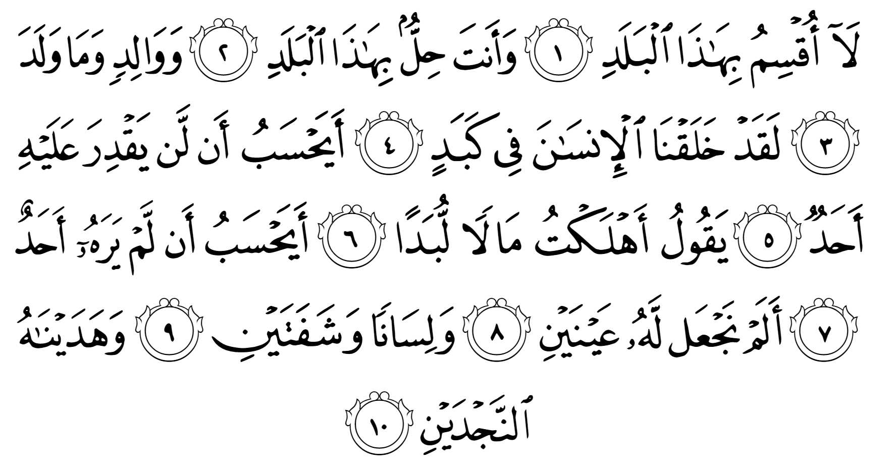

না! আমি শপথ করছি এই শহরের। এমন এক শহরের যার নাগরিক স্বয়ং তুমি। শপথ করছি জন্মদাতার এবং যা সে জন্ম দেয়। নিঃসন্দেহে আমি মানুষকে সৃষ্টি করেছি কঠিন পরিশ্রমের মধ্যে দিয়ে যাওয়ার জন্য। সে কি মনে করে যে, তার উপরে কারও ক্ষমতা নেই? বলে কিনা, “অনেক টাকা উড়িয়ে দিলাম।” সে কি মনে করে যে, তাকে কেউ দেখছে না?
আমি কি তাকে দুটো চোখ বানিয়ে দেইনি? একটা জিভ, দুটো ঠোঁট? আমি কি তাকে ভালো-মন্দের পরিষ্কার দুটো পথ দেখিয়ে দেইনি? — আল-বালাদ
শপথ করছি জন্মদাতার এবং যা সে জন্ম দেয়
কুর‘আনে যখন আল্লাহ تعالى কোনো কিছুর শপথ নেন, তার মানে সেটা কোনো বিরাট ব্যাপার। মানুষ যেন তা নিয়ে গভীরভাবে চিন্তা ভাবনা করে। এই সুরাহ’য় আল্লাহ تعالى আমাদেরকে পৃথিবীতে যে প্রাণ জন্ম দেওয়ার পদ্ধতি রয়েছে, তা লক্ষ্য করতে বলছেন। আমরা কি চিন্তা করে দেখেছি, আজকে জন্ম দেওয়ার যে পদ্ধতি আল্লাহ تعالى দিয়েছেন, তার থেকে ভালো কোনো পদ্ধতি কিছু হতে পারে কিনা? যদি কোনো উদ্ভিদ বা প্রাণী তার জন্মদাতা ছাড়াই এমনিতেই জন্ম হতো, তাহলে কী অবস্থা হতো? প্রথম জন্মদাতাকে কে জন্ম দিয়েছিল?
আমরা জানি, মুরগি ডিম পারে, তারপর ডিম থেকে মুরগি হয়। কিন্তু সর্বপ্রথম মুরগি ডিম ছাড়াই কীভাবে জন্ম নিলো? যদি সে ডিম থেকে এসে থাকে, তাহলে সেই ডিম কে পেড়েছিল?
বিবর্তনের ধারনা অনুসারে এক প্রাণী বিবর্তিত হয়ে আরেক প্রাণী তৈরি হয়। তার মানে একসময় এমন একটা প্রাণী ছিল, যা ডিম পাড়ত না। কিন্তু তারপর তা বিবর্তিত হয়ে ডিম পাড়া শুরু করলো। কিন্তু ডিম পাড়ার জন্য যে জটিল অঙ্গপ্রত্যঙ্গ লাগে, সেটা কীভাবে কোনো একটা প্রাণীর মধ্যে হঠাৎ করে তৈরি হলো? একটা প্রাণী আগে ডিম পাড়ত না, কিন্তু এক প্রজন্ম থেকে সেটা হঠাৎ করে ডিম পারা শুরু করলো —সেটা কীভাবে সম্ভব? আবার, কয়েক প্রজন্ম ধরে একটা প্রাণী তার ভেতরে ডিম পাড়ার অঙ্গ একটু একটু করে তৈরী করছিলো, এটাও তো বিবর্তনের বিরোধী। কারণ বিবর্তন জটিল অপ্রয়োজনীয় বা আংশিক অঙ্গ তৈরী করে না। —এভাবে প্রতিটি প্রাণীর প্রথম জন্মদাতা কীভাবে আসলো, তা নিয়ে কি আমরা চিন্তা করেছি? আল্লাহ تعالى যে জন্মদাতার শপথ করেছেন, তার পেছনে এক বিশাল রহস্য রয়েছে। এর সমাধান মানুষ হাজার বছর গবেষণা করেও পায়নি।
আবার ধরুন, পৃথিবীতে জন্মদাতার কোনো ধারনা ছিল না। পুকুর, নদী, নালা, খাল, বিল, মাটি থেকে এমনিতেই কিছুক্ষণ পর পর বিভিন্ন উদ্ভিদ এবং প্রাণী জন্ম হয়ে বেরিয়ে আসতে থাকে। তাহলে কী অবস্থা হতো আমরা কল্পনা করি।
প্রথমত, যদি উদ্ভিদ এবং প্রাণী বিভিন্ন রাসায়নিক পদার্থের মিশ্রণে নিজে থেকেই জন্ম নিতো, তাহলে সেগুলোর কারও মধ্যে কোনো মিল থাকতো না। কারণ রাসায়নিক পদার্থের একেক মিশ্রণ থেকে একে রকমের প্রাণ তৈরি হতো। একবার হয়ত একটা ডাল-পালা, পাতা সহ একটা গাছ তৈরি হতো। আরেকবার ডালের আগায় পাতার বদলে চোখ সহ আরেকটা গাছ তৈরি হতো। আরেকবার একটা প্রাণী তৈরি হতো যার এক পায়ে গাছের মূল, আরেক পায়ে অক্টোপাসের শুঁড়। আল্লাহ تعالى জন্মদাতার ব্যবস্থা করেছেন দেখেই এক ধরণের প্রাণ থেকে একই ধরণের আরও প্রাণ তৈরি হয়। না হলে ভয়াবহ অবস্থা হতো।
দ্বিতীয়ত, কিছু রাসায়নিক পদার্থ একসাথে মিশেই যদি প্রাণ তৈরি হয়ে যেত, তাহলে রাসায়নিক পদার্থের মিশ্রণ থেকে আসলে কখনই জটিল প্রাণ অর্থাৎ কোনো উদ্ভিদ বা প্রাণী হতো না। শুধুই ভাইরাস তৈরি হওয়া সম্ভব হতো, যা আসলে কোনো প্রাণ নয়। আজকে জন্মদাতার ধারনা আছে দেখেই ভাইরাসের থেকেও জটিল প্রাণ তৈরি হওয়া সম্ভব হয়েছে।
যে কোনো ধরনের জটিল প্রাণ তৈরির শর্ত হচ্ছে, তা তৈরি হতে হবে একটি নির্দিষ্ট ডিজাইন অনুসরণ করে। এই ডিজাইনকে জন্মদাতা তার সন্তানের মধ্যে কোনোভাবে দিয়ে দেবে। তারপর সেই ডিজাইন অনুসরণ করে হুবহু না হলেও, খুবই কাছাকাছি অনুরূপ একটি প্রাণ জন্ম নেবে। আর ডিজাইন হতে হবে নিখুঁত এবং একটি সম্পূর্ণ প্রাণী সুস্থ সবলভাবে তৈরী করার ডিজাইন। আল্লাহ تعالى এই ডিজাইন সংরক্ষণ করেন প্রতিটি কোষের ভেতরে ডিএনএ-র মধ্যে।
যেমন, মানুষের ডিএনএ-র মধ্যে আল্লাহ تعالى লিখে দিয়েছেন: কীভাবে মানুষের দেহকে বানাতে হবে। এগুলোর মধ্যে তিন শত কোটি নির্দেশ লেখা রয়েছে। এই নির্দেশগুলো বলে দেয় কীভাবে চোখ, হাত, পা, মাথা, দেহের ভেতরে অঙ্গ-প্রত্যঙ্গ সবকিছু বানাতে হবে। কোনটার কী আকৃতি হবে, কী রঙের হবে, কী কাজ করবে। কোনটায় কী সমস্যা থাকবে। কোনটা কখন বিকল হয়ে যাবে। মানুষের শরীরের কয়েক লক্ষ কোটি কোষ কোথায় কোন জায়গায় বসবে, কীভাবে কাজ করবে, এই সবকিছু বলা থাকে ডিএনএ-তে।
এই তিন শত কোটি নির্দেশ বই আকারে ছাপালে ১৩০ খণ্ডের বই হয়, যা পড়তে মানুষের প্রায় ৯৫ বছর লাগবে। এই বিশাল নির্দেশমালা আল্লাহ تعالى সংরক্ষণ করছেন ক্রোমোজোম নামের এমন ক্ষুদ্র একটি ব্যবস্থায়, যা খালি চোখে দেখা তো যা-ই না, সাধারণ অণুবীক্ষণ যন্ত্র দিয়েও দেখা যায় না, বিশেষ শক্তিশালী অণুবীক্ষণ যন্ত্র লাগে। আর এই ক্রোমোজোমগুলো, যা কিনা ১৩০ খণ্ডের বইয়ের সমান, হুবহু একইভাবে রাখা আছে দেহের প্রতিটি কোষে। আমাদের দেহে কয়েক লক্ষ কোটি কোষের প্রত্যেকটির মধ্যে ঠিক একইভাবে তিন শত কোটি নির্দেশ লেখা আছে।
তৃতীয়ত, জন্মদাতার ধারনা আছে দেখেই কোটি কোটি বছর ধরে প্রাণ টিকে আছে। কারণ যখন কোনো প্রাণীর এক প্রজন্ম আশেপাশের প্রতিকুল পরিস্থিতির সাথে খাপ খাইয়ে টিকে থাকে, তখন তার ক্রোমোজোমের মধ্যে সেই পরিস্থিতির সাথে খাপখাইয়ে চলার জন্য কী কী পরিবর্তন দরকার হয়েছিল, তা সংরক্ষণ হয়ে যায়। এরপর যখন সেই ক্রোমোজোম থেকে সন্তান জন্ম নেয়, তখন তারা জন্ম নেয় সেই পরিস্থিতির সাথে খাপ খাইয়ে চলার জন্য প্রয়োজনীয় বৈশিষ্ট্য নিয়েই। একে ‘প্রাকৃতিক নির্বাচন’ বলা হয়, যাকে অনেকে বিবর্তন বলে ভুল করেন। এই প্রাকৃতিক নির্বাচন আছে দেখেই উদ্ভিদ এবং প্রাণীজগত হাজারো প্রতিকূলতার মধ্যেও বংশবৃদ্ধি করে টিকে আছে। যদি কোটি বছর আগের আম গাছের ক্রোমোজোম নিয়ে আজকেও আম গাছ জন্ম হতো, তাহলে তা আজকের পৃথিবীর প্রতিকূলতার সাথে লড়াই করে হেরে গিয়ে কয়েকদিন পরেই মরে যেত। আম গাছ বছরের পর বছর নিজে সংগ্রাম করে বেঁচে থেকে, তারপর তার বেঁচে থাকার অভিজ্ঞতাকে ক্রোমোজোমের মাধ্যমে তার সন্তানদের মধ্যে দিয়ে দেয় দেখেই, তার সন্তান জন্ম নিয়েই সেই প্রতিকূলতার সাথে নিজেই সংগ্রাম করে টিকে থাকতে পারে।
মানুষ যদি সময় নিয়ে এই পদ্ধতিটির পেছনে কত বিস্ময়, কত রহস্য আছে তা ভেবে দেখে, তাহলে তারা আল্লাহর تعالى ক্ষমতা, সৃজনশীলতার অসাধারণ সব নিদর্শন খুঁজে পাবে। আল্লাহ تعالى কুর‘আনে মানুষকে বহুবার তাঁর সৃষ্টিজগৎ নিয়ে চিন্তা করতে বলেছেন। এগুলো বলার পেছনে উদ্দেশ্য রয়েছে। কারণ আল্লাহকে تعالى জানার জন্য আমাদের কাছে দুটো মাত্র উপায় রয়েছে। একটি হচ্ছে তাঁর দেওয়া বাণী। আরেকটি হচ্ছে আমাদের চোখের সামনে তাঁর এই বিশাল সৃষ্টিজগৎ। আল্লাহর تعالى সম্পর্কে একটি সুষম ধারনা পেতে হলে শুধু তাঁর বাণী পড়লেই হবে না, একইসাথে তাঁর সৃষ্টিজগৎ নিয়েও গবেষণা করতে হবে। নাহলে আমরা তাঁর সম্পর্কে একটি অসম্পূর্ণ, ভারসাম্যহীন ধারনা নিয়ে থাকবো। আমাদের ইসলাম বোঝা এবং মানা দুটোই ভারসাম্যহীন হয়ে যাবে।
ভারসাম্যহীন ইসলাম মানার ফলাফল হয় ভয়ংকর। প্রচুর ইসলাম নিয়ে পড়ার পরেও দেখা যায় আল্লাহর تعالى প্রতি শ্রদ্ধা তৈরি হয় না। নানা ধরনের সন্দেহ, প্রশ্ন মাঝে মধ্যেই ঈমানে ফাটল ধরিয়ে দেয়। কিছু মন মতো না হলে আল্লাহকে تعالى দোষ দিতে থাকে। “কেন আল্লাহ تعالى এরকম করলো? ওরকম কী হতে পারত না? আমার সাথেই এমন হলো কেন? অন্যের কেন এমন হয় না?” —এই সব প্রশ্ন জর্জরিত করে দেয়। আর সবচেয়ে ভয়ংকর অবস্থা হয় যখন ইসলাম নিয়ে পড়তে পড়তে একসময় ইসলামের প্রতি অনীহা চলে আসে। একবার সেই অবস্থায় চলে গেলে সেখান থেকে ফিরে আসা অনেক কঠিন।
নিঃসন্দেহে আমি মানুষকে সৃষ্টি করেছি কঠিন পরিশ্রমের মধ্যে দিয়ে যাওয়ার জন্য
আমরা যদি মানুষের জন্ম নেওয়ার পদ্ধতি দেখি, তাহলে দেখবো, মানুষের জন্ম নেওয়ার মুহূর্ত থেকেই শুরু হয় তার পরিশ্রম। জন্ম নেওয়ার সময় তাকে চারিদিক থেকে পিষে সরু একটা সুরঙ্গ দিয়ে চেপেচুপে বের করা হয়। এরপর সে এসে পড়ে এক ভয়ংকর পরিবেশে। এতদিন সে এয়ারকন্ডিশন্ড পানির মধ্যে আরামে ভেসে বেড়াচ্ছিল। স্বয়ংক্রিয়ভাবে শরীরে পুষ্টি চলে যাচ্ছিল। খাওয়ার কষ্ট করতে হচ্ছিল না। এখন শুরু হলো তার ক্ষুধার কষ্ট। চিৎকার দিয়ে মা খুঁজে বের করে খাওয়ার জন্য পরিশ্রম করতে হয়। খেতে গেলে গলায় আটকে যায়। দম বন্ধ হয়ে যায়। হেঁচকি উঠে। তারপর মল ত্যাগের যন্ত্রণা। কিছুক্ষণ পর পর কাপড় ভিজিয়ে প্রস্রাব। তারপর উপর আছে ঠাণ্ডা এবং গরমের কষ্ট। পৃথিবীর যত ভাইরাস, ব্যাকটেরিয়া মহানন্দে তার উপর ঝাঁপিয়ে পড়ে। তার ছোট শরীর থেকে যত পারে পুষ্টি নিয়ে যায়। বিছানায় পোকা কুট কুট করে কামড়ায়। কাপড়ের ঘষা লেগে চামড়া জ্বলে লাল হয়ে যায়। কয়েকদিন পর পর সর্দি লেগে নাক বন্ধ, জ্বর, মাথা ব্যাথা। —কষ্টের পর কষ্ট। এভাবে সে হাজারো সংগ্রাম করে একটু একটু করে বড় হয়। একদিন বসা শেখে। তারপর একদিন কোনোমতে দাঁড়াতে পারে। তারপর একটু একটু করে হাটা। দৌড়াতে গিয়ে পড়ে গিয়ে ব্যাথা পাওয়া। বহু বছর সংগ্রামের পর একদিন গিয়ে নিজের দেহের উপর নিয়ন্ত্রণ পায়।
এতো গেল জন্মের প্রথম কয়েক বছর। আসল সংগ্রাম এখনও বাকি। শিশুকাল, বাল্যকাল, কিশোর বয়স, তরুণ, প্রবীণ, বৃদ্ধ বয়সের সংগ্রাম আসছে সামনে। একজন মানুষের জীবনের প্রথম থেকে শেষ পর্যন্ত সংগ্রামের পর সংগ্রাম। পৃথিবীতে সে আসে কত দুর্বল, অসহায় অবস্থায়। কয়েকদিনের জন্য কিছু শক্তি, সামর্থ্য পায়। তারপর আবার দুর্বল, অসহায় অবস্থায় ধুঁকে ধুঁকে জীবন পার করে একদিন মাটিতে গিয়ে কেঁচো, বিছা, ফাঙ্গাসের খাবারে পরিণত হয়। অথচ এই মানুষই কিনা—
সে কি মনে করে যে, তার উপরে কারও ক্ষমতা নেই? বলে কিনা, “অনেক টাকা উড়িয়ে দিলাম।” সে কি মনে করে যে, তাকে কেউ দেখছে না?
এই দুর্বল মানুষ, যার বেঁচে থাকার জন্য পরিশ্রমের কোনো বিরাম নেই, সেই মানুষই একটু নিজের পায়ে দাঁড়াতে পেরেই মনে করা শুরু করে যে, তার কাজের জন্য কাউকে জবাব দিতে হবে না। তখন সে নিজের লোভ-লালসা মেটানোর জন্য অন্যায়, অবিচার, দুর্নীতি করে। নোংরা বিনোদনে নিজের চরিত্রকে কলুষিত করে ফেলে। যে কোনো মূল্যে সে যা চাই, তাই তাকে পেতে হবে।
এদেরকে যখন কোনো ভালো কাজে কিছু দান করতে বলা হয়, তখন সে বলে, “আরে ভাই, কয়েকদিন আগেই ৮০ লাখ টাকা দিয়ে একটা গাড়ি কিনলাম। এখন আমাকে কিছু দিতে বলবেন না। আপনারা পরে আসেন।” এই ধরনের মানুষ কি চিন্তা করে দেখে না যে, কীসব কাজে সে টাকা উড়াচ্ছে, তার সবই আল্লাহ تعالى দেখছেন?
“সে কি মনে করে যে, তাকে কেউ দেখছে না?”
—এই হচ্ছে মানুষের পাপের মূল কারণ। মানুষ মনে করে যে, সে যখন টেবিলের তলা দিয়ে ঘুষ নিচ্ছে, চুপচাপ ফোনে আলাপ করে প্রজেক্ট থেকে কোটি টাকা মেরে দিচ্ছে, গোপনে মিটিং করে গরিবের হক, দেশের সম্পদ বিদেশে নিজের ব্যাংক একাউন্টে পাচার করে দিচ্ছে —এগুলো কেউ দেখছে না। তার মনে ঠিকই পুলিশ, ডিজিএফআই, দুদকের ভয় আছে; কিন্তু আল্লাহর تعالى ভয় নেই।
“সে কি মনে করে যে, তাকে কেউ দেখছে না?”
—এটাই হচ্ছে তাকওয়ার অভাব। তাকওয়া মানেই হচ্ছে, আল্লাহ تعالى তাকে সবসময় দেখছেন এবং তাকে তার সব কাজের জন্য আল্লাহর تعالى কাছে জবাব দিতে হবে। এই তাকওয়া না থাকলে মানুষ আর মানুষ থাকে না। তখন সে পশুর থেকেও অধম হয়ে যায়। একারণেই কুর‘আনে তাকওয়ার প্রতি এত জোর দেওয়া হয়েছে। একজন মানুষের যতই জ্ঞান, বুদ্ধি, প্রতিভা থাকুক না কেন, তাকওয়া না থাকলে সেগুলো নিজের এবং অন্যের ক্ষতি করতে কাজে লাগাতে খুব একটা বাঁধে না।
আমি কি তাকে দুটো চোখ বানিয়ে দেইনি? একটা জিভ, দুটো ঠোঁট?
আজকে যদি আমাদেরকে বলা হয়, এক কোটি টাকা দেওয়া হবে, চোখ দুটো বিক্রি করে দেন —আমরা কি রাজি হবো? যদি বলা হয়, এক কোটি টাকার বিনিময়ে আপনার জিভ এবং ঠোঁট দুটো দিয়ে দেন —কেউ কি আছে যে রাজি হবে?
আমরা আমাদের শরীরে কোটি কোটি টাকার সম্পদ নিয়ে ঘুরে বেড়াচ্ছি। এই অমূল্য সম্পদগুলো না চাইতেই আল্লাহ تعالى বিনামূল্যে দিয়েছেন। এগুলো অর্জন করার জন্য আমাদেরকে কিছুই করতে হয়নি। এই সম্পদগুলো কেনার জন্য আজকে পৃথিবীতে অনেক অসুস্থ, বিকলাঙ্গ মানুষ তাদের সব সম্পদ দিয়ে দিতে রাজি আছে। অথচ এগুলো আমরা সম্পূর্ণ বিনামূল্যে পেয়েও এগুলোর কদর করি না, আল্লাহর تعالى প্রতি কৃতজ্ঞতা দেখানো তো দূরের কথা।
আল্লাহর تعالى দেওয়া এই অঙ্গগুলো ব্যবহার করেই আমরা আমাদের যাবতীয় সম্পদ অর্জন করি। এগুলো না থাকলে আমাদের জীবনে কোনো অর্জনই থাকতো না। অথচ এগুলো ব্যবহার করে সম্পদ অর্জন করার পর হঠাৎ করে কীভাবে যেন সব সম্পদ ‘আমার’ হয়ে যায়। তারপর আর আল্লাহর تعالى পথে ‘আমার’ সম্পদ খরচ করতে চাই না। —এরচেয়ে বড় অকৃতজ্ঞতা আর কী হতে পারে?
(চলবে)